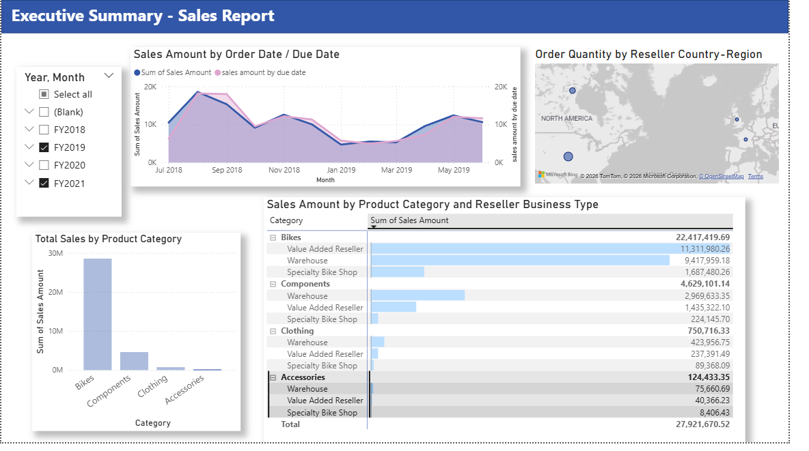

ITIS5.450 Information Systems gave me the economic and organisational context for how businesses capture, store, process, and share data to support decisions, and how IT is used to do that. Over 14 weeks I completed weekly one-page lab reports and three larger labs. The weekly topics ranged from comparing off-the-shelf business software (Business Central, Xero, Odoo) and the IT footprint of small, medium, and large organisations, to systems thinking, systems analysis, accounting and IT budgeting, IT resourcing and governance (ITIL), change management, ERP, and future IT trends. The larger labs were hands-on: using Odoo ERP, extracting data and building a report, and building a PowerBI dashboard.
I learned to look at an organisation as a whole and work out what information systems it needs. I compared business software on cost, implementation, risk, and support, and used tools such as context diagrams, swimlane flowcharts, and rich pictures to model how an organisation works. I learned the basics of double-entry accounting and why IT professionals need them, and I built a simple IT budget as a proportion of gross sales. I also learned how change management differs from project management, how to research and choose between solutions, and why ERP implementations fail. In the practical labs, I learned how an ERP connects masterfiles, purchasing, sales, and the general ledger, how to extract data from a database with SQL and summarise it with Excel pivot tables, and how to turn data into visualisations and dashboards in PowerBI. Writing weekly reports with APA referencing and critical reflection also taught me to go beyond describing a tool and weigh alternatives, risks, and costs.
I completed the weekly reports, each with a relevant graphic, APA referencing, and critical analysis. In Task B, I worked through Odoo by creating customer, item, supplier, and inventory masterfiles, then running a full purchase and sales cycle and tracing it into reports, dashboards, and the general ledger. In Task C, I wrote SQL in Adminer to extract sales data from Odoo's PostgreSQL database, then built a pivot-table report for managers in Excel with a documentation sheet. In Task D, I built a PowerBI dashboard from the AdventureWorks sales data, created an additional visualisation of my own, and researched Sankey diagrams and an innovative visualisation.

This course showed me how technology connects to the way an organisation actually operates. I followed a business transaction from data entry in Odoo through to reports, dashboards, and the general ledger, and I could explain how each stage supports decision-making. The weekly reports built a habit of researching beyond class material, referencing in APA, and weighing alternatives, costs, and risks rather than just describing a tool. I found it hard to fit research, a graphic, and critical thinking into about 300 words each week, so I'd like to get better at writing concisely. I'd also plan earlier for the large labs, since the Odoo environment was only available for a short window, and keep practising SQL, pivot tables, and PowerBI so I can build more complex queries and dashboards independently. Overall, I now understand why IT professionals need to know about accounting, governance, and change management as well as technology, and that broader view will help me bridge technical teams and the business in a future role.
The overall course grade I recieved for this course was a 82% which is an A-